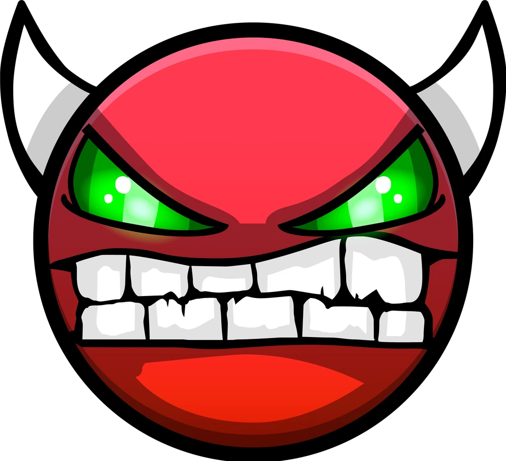

Moje Statistiky
Statistiky ukazují můj celkový postup hrou. Vyšší čísla znamenají stovky až tisíce hodin hraní.
Stars
50472
Získávají se za úspěšné dokončení jakýchkoliv oficiálních nebo ověřených online levelů (1-10 za každý level).
Secret Coins
164
Skryté mince přímo v oficiálních levelech od hlavního vývojáře (RobTop). Vyžadují těžší a skrytý postup. Maximální počet je 164.
User Coins
5470
Mince schované v mapách, které staví sami hráči. Jejich sbírání bývá těžší než standartní cesta.

Demons
2240
Počet poražených levelů s nejvyšší a nejbrutálnější obtížností ve hře. Vyšší číslo neznamená nutně větší skill.
Můj Osobní Demon List
Žebříček pěti nejtěžších levelů, které se mi v mé herní historii podařilo dokončit.
Bloodlust
#221
Pokusy: 32,964
Szyslak
#269
Pokusy: 16,393
Shutdown
#288
Pokusy: 10,286
Sonic Wave Rebirth
#339
Pokusy: 3,854
Sonic Wave
#340
Pokusy: 25,124
Na čem zrovna pracuju
Levely, které mám momentálně rozehrané, aktivně je trénuji a snažím se překonat svůj stávající rekord.
Zodiac
Aktuální rekord: 97%
Dosavadní pokusy: ~55,000
SUPERHATEMEWORLD
Aktuální rekord: 60%
Dosavadní pokusy: ~11,000
Frozen Cave
Aktuální rekord: 51%
Dosavadní pokusy: ~7,000
Porovnej své statistiky se mnou
Hraješ taky Geometry Dash? Zadej své statistiky a zjisti, kdo z nás je lepší!